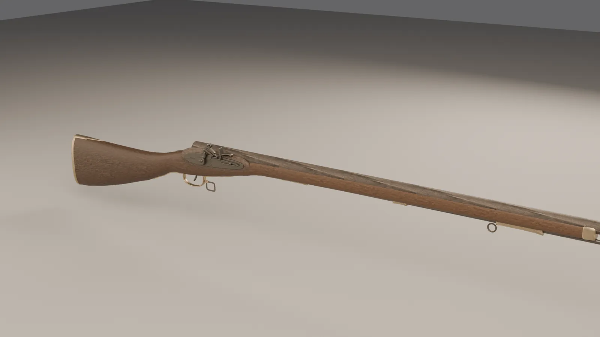
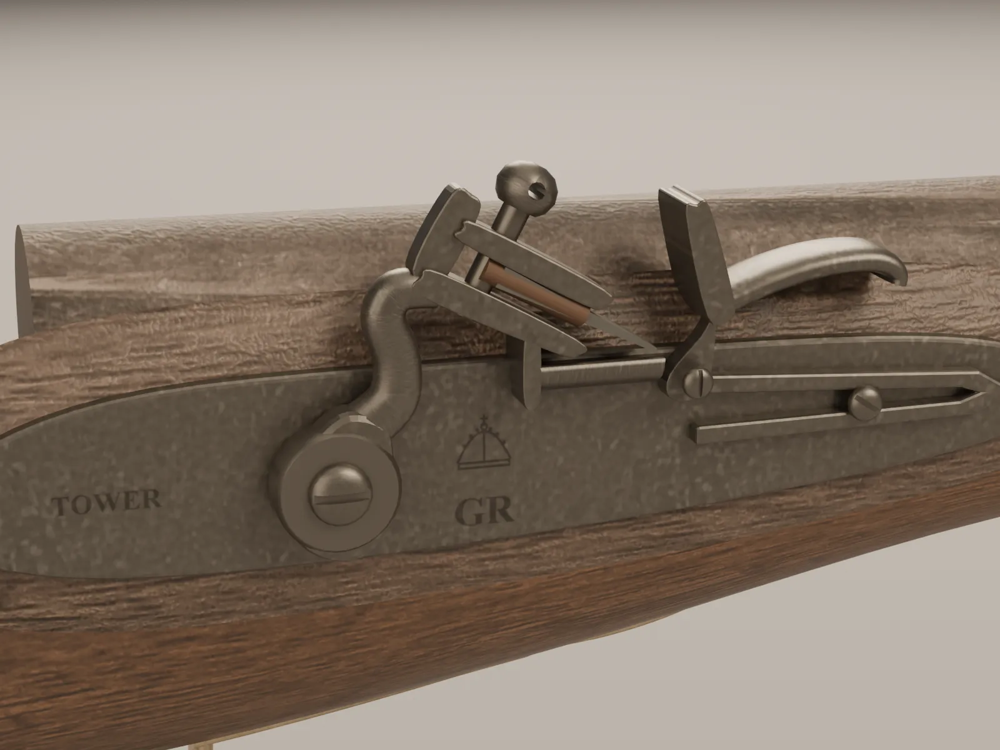
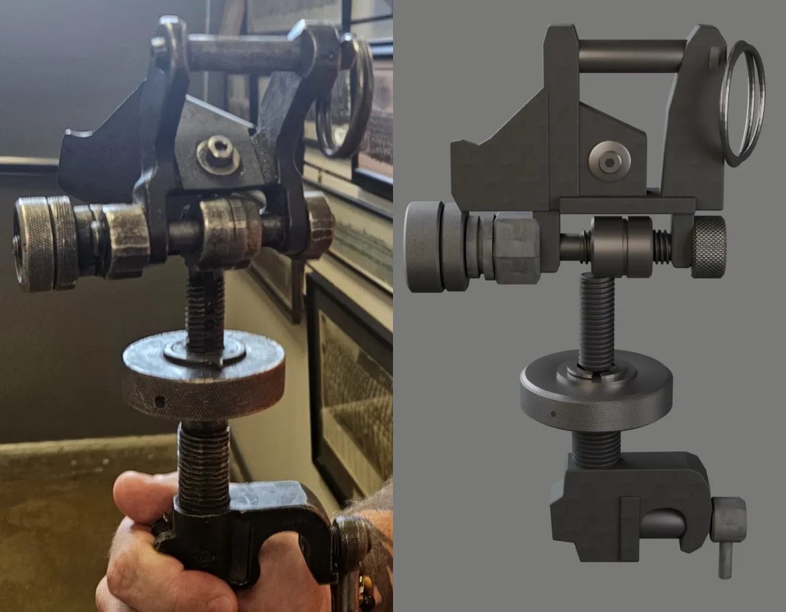
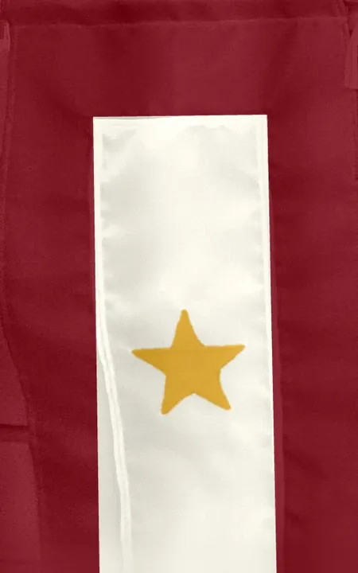
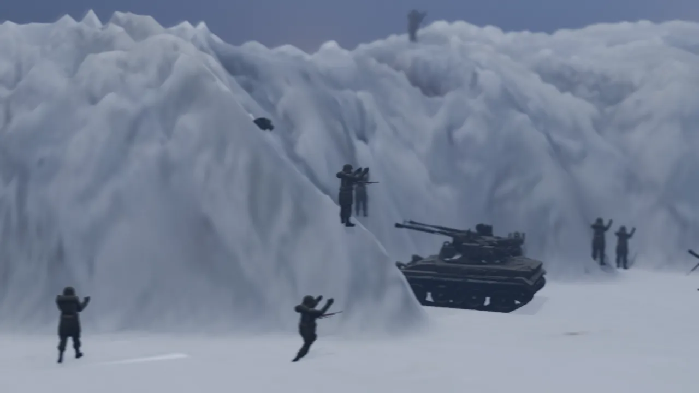
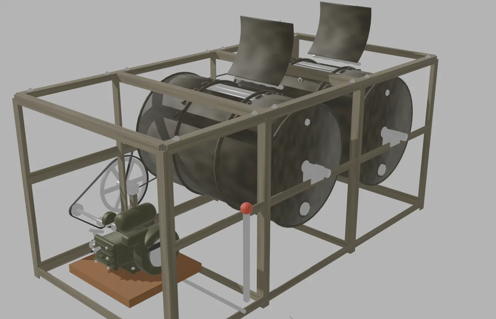
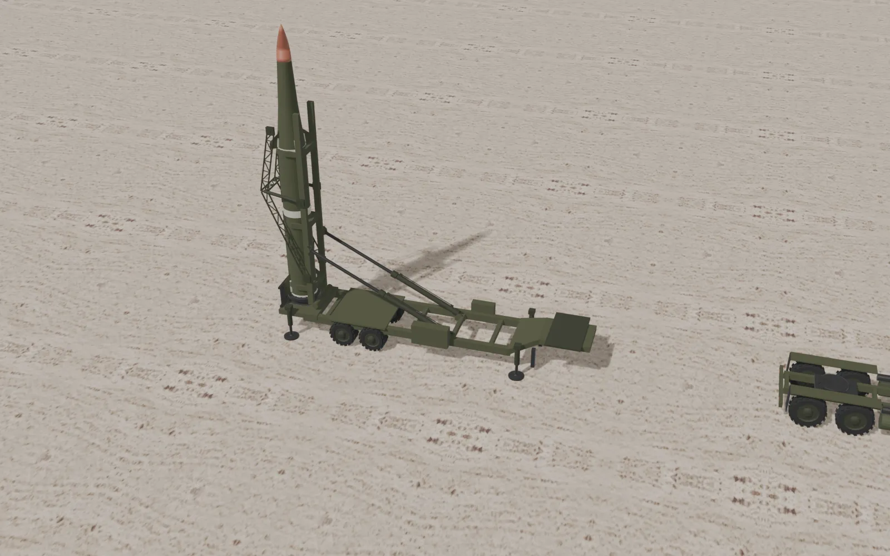
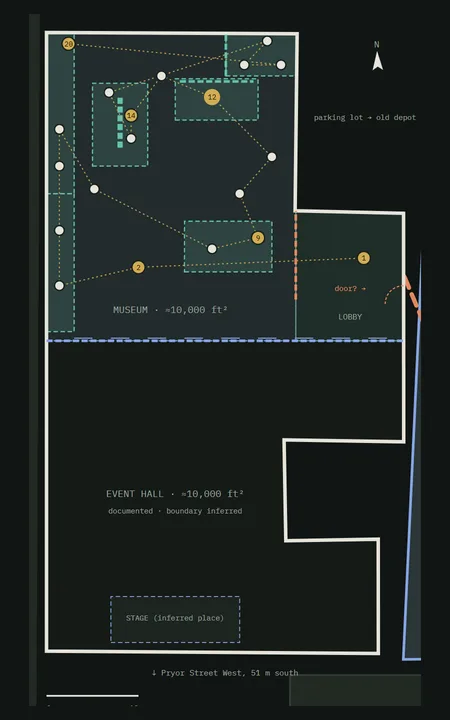

18th century · British
Brown Bess musket provisional ID
Likely an India Pattern "Brown Bess." The lock is articulated, so visitors can follow the 1764 drill and watch a shot in 40× slow motion.

Before the VR build, we are turning objects in the AVMA galleries into interactive 3D records. Each one runs in a phone or desktop browser, and every model can be downloaded.
Each record starts with photographs taken in the galleries. Colors are measured from those photos and surfaces are cut from them. The photograph can be projected back onto the model to check the fit, and research on the object's history, markings and period use is cited on the page.
Color-coded paradata shows which parts are photographed, which come from references and which are inferred.
Mechanisms move the way they did: a flintlock fires, a washer drum tumbles, a launcher erects.
Each object's .glb models, metadata and research notes are packaged as a zip download.
The full gallery is embedded below. Pick an object to open its 3D viewer, or open it in a new tab ↗ for the best experience on a phone.

Likely an India Pattern "Brown Bess." The lock is articulated, so visitors can follow the 1764 drill and watch a shot in 40× slow motion.

A traversing-and-elevating mechanism of the M122 type, shown on its mount with an M240B for context and the photo matched onto the model.

A virtual vitrine honoring Maj. William E. Winter (Beirut, 1983) and LCpl Adam E. Loggins (Iraq, 2007). Shown with the permission of the museum and the families; personal details are blurred.

The museum's diorama, matched to its photograph and set on real terrain. Visitors can walk in at 1:90 scale, ride along, and switch to period-accurate Marine kit and vehicles.

A drum washer improvised by Hal Spencer of the 1343rd Engineer Combat Battalion. A cutaway shows the engine, belt drive and tumbling laundry at work.

An erector-launcher and tractor that raise the missile, with a mission clock tracing the burns and ballistic arc of a flight.

A site model of the museum campus showing the current main building and the former building across the street, as a guide to where objects sit.
These are working prototypes. Identifications marked "provisional" are still being checked with museum staff. Corrections are welcome: jmoon19@ua.edu.